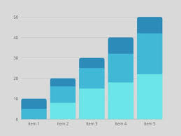

Episodios com maiores notas
Armas mais usadas para matar
Atores que ficaram mais tempo na serie
Casa que mais matou
Locais com mais mortos
Episodios mais longos
Numeros de mortes por temporada
Quem matou mais
Regiao com mais casas
Rei que mais foi atacado
Rei que mais atacou
Temporada com Melhores Notas
Top 10 Atores que mais apareceram

grafico 2
grafico 3
grafico 4
grafico 5
grafico 6
grafico 7
grafico 8
grafico 9
grafico 10
grafico 11
grafico 12
grafico 13